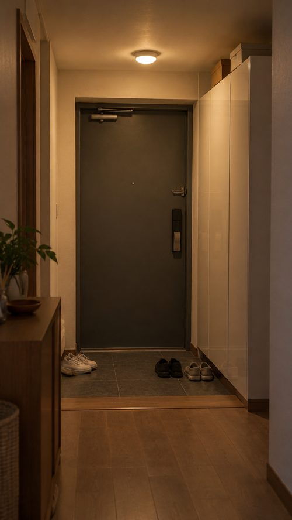
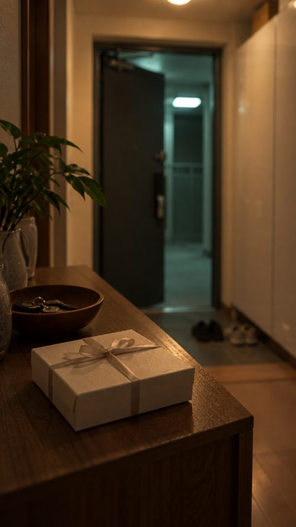

두 친구 1화 «치킨 사 오면 사고 친 거»
대본 v32026-10-24검토 대기 — 이 페이지를 연 것은 승인이 아닙니다.
v2에서 지적받은 것 → 고친 것
| 지적 | v3 |
|---|---|
| «몇 시인지 알아?» → «유치원 때부터 봤잖아» 동문서답 | 한 줄은 반드시 바로 앞 줄에 대한 대답. 관계 설명은 현우의 반응(«치킨 사 오면 꼭 사고 쳤어»)으로 |
| 전세 사기로 갑자기 쫓겨나는 건 이상 | 밤 11시에 부탁하러 옴. 집이 경매로 낙찰된 뒤 이달 말까지 비워 줘야 하고, 보증금은 소송으로 따로 받아야 함 |
| 처음부터 «이자 반 낼게» — 순서가 튐 | «언제까지?» → «보증금 받을 때까지» → «그게 언젠데» → «…일 년? 이 년?» 다음에 돈 이야기 |
| «방 비었잖아» → «파혼 이유는 묻지 마» — 각자 하고 싶은 말 | 지수 짐 → «한쪽으로 몰아 놓을게» → «건드리지 마» → (그 단호함에) «근데 진짜 왜 헤어졌어?» → «그거 물을 거면 치킨 들고 가» |
대화 (소리 내 읽어 보는 판)
밤 11시. 현관 초인종. 문을 연 현우. 복도에 치킨 봉지를 든 다은.
- 1현우뭐야. 이 시간에 치킨을 왜 사 와.
- 2다은너네 집 방 하나 남지?
- 3현우…너 유치원 때부터 치킨 사 오면 꼭 사고 쳤어.
- 4다은이번엔 내가 친 거 아니야. 우리 집 경매 낙찰됐대.
- 5현우그 전세 사기? 보증금은?
- 6다은소송해야 돼. 이달 말까지 집은 비워 줘야 되고.
- 7현우그래서 우리 집에 들어오겠다고?
- 8다은보증금 받을 때까지만.
- 9현우그게 언젠데.
- 10다은…일 년? 이 년?
현우의 시선이 신발장 위, 뜯지 않은 청첩장 상자로 갔다가 복도 끝 방문으로.
- 11현우그 방, 지수 짐 아직 그대로야.
- 12다은짐은 내가 한쪽으로 몰아 놓을게.
- 13현우건드리지 마.
- 14다은…근데 진짜 왜 헤어졌어?
- 15현우그거 물을 거면 치킨 들고 가.
- 16다은안 물어, 안 물어.
다은이 휴대폰 계산기를 현우 눈앞에 내민다.
- 17다은이자 반, 관리비 반. 딱 2년.
- 18현우…연애 간섭 금지도 넣어.
- 19다은콜.
현우 휴대폰이 울린다. 메시지를 보고 표정이 굳는다.
- 20현우…이번 주에 짐 가지러 온대.
- 21다은…누가?
현우의 눈이 복도 끝 방문으로. 암전.
웃음 포인트: 3 · 10 · 15–16 · 18–19. «같이 살게 되나»는 19에서 닫히고, 20–21이 다음 화로 넘기는 한마디(누가 오는지는 11에서 이미 들었다).
인물
다은 — 화면 오른쪽 · 계획형·직설, 힘든 티를 안 냄
현우 — 화면 왼쪽 · 말수 적고 무표정, 속은 여림
컷 (생성 컷 24개 — 대사 21 · 무대사 3)
장소는 전부 현관. 현우 왼쪽(집 안) · 다은 오른쪽 고정. 같은 샷 크기가 연달아 오지 않게 배치. 생성은 5–6초로 뽑고 완성본 리듬은 리컷에서.
| 컷 | 대사 | 구도 | 움직임 |
|---|---|---|---|
| C01 | 1 현우 | 다은 어깨너머 현우 · 바스트 | 문을 열고 치킨 봉지를 내려다봄 |
| C02 | 2 다은 | 현우 어깨너머 다은 · 미디엄 | 치킨 봉지를 들어 보임 |
| C03 | 3 현우 | 현우 · 클로즈업 | 눈을 가늘게 뜸 |
| C04 | 4 다은 | 다은 · 바스트 | 어깨를 으쓱 |
| C05 | 5 현우 | 현우 · 미디엄 클로즈업 | 문에서 손을 뗌 |
| C06 | 6 다은 | 다은 · 클로즈업 | 시선을 잠깐 내림 |
| C07 | 7 현우 | 투샷 옆모습 · 미디엄 | 팔짱을 낌 |
| C08 | 8 다은 | 다은 · 바스트 | 치킨 봉지를 내밈 |
| C09 | 9 현우 | 현우 · 클로즈업 | 봉지는 안 받고 눈만 |
| C10 | 10 다은 | 다은 · 미디엄 클로즈업 | 눈을 피하며 웃음 반 |
| C11 | — | 인서트 · 청첩장 상자 · 미디엄 (승인 K4) | 카메라가 조금 다가감 |
| C12 | 11 현우 | 현우 · 바스트 | 시선이 방으로 갔다 돌아옴 |
| C13 | 12 다은 | 다은 · 미디엄 | 운동화를 벗으며 |
| C14 | 13 현우 | 현우 · 클로즈업 | 턱에 힘 |
| C15 | 14 다은 | 다은 · 미디엄 클로즈업 | 고개를 갸웃 |
| C16 | 15 현우 | 현우 · 바스트 | 치킨 봉지를 가리킴 |
| C17 | 16 다은 | 다은 · 미디엄 | 두 손을 들어 항복 |
| C18 | 17 다은 | 투샷 · 와이드 · 계산기는 비스듬히 | 휴대폰을 현우 눈앞에 |
| C19 | 18 현우 | 현우 · 클로즈업 | 계산기를 보다 다은을 봄 |
| C20 | 19 다은 | 다은 · 바스트 | 바로 휴대폰을 거둠 |
| C21 | — | 인서트 · 휴대폰 진동 · 익스트림 클로즈업 | 진동(화면 글자 안 보이게) |
| C22 | 20 현우 | 현우 · 미디엄 클로즈업 | 표정이 굳음 |
| C23 | 21 다은 | 다은 · 클로즈업 | 봉지를 든 채 멈춤 |
| C24 | — | 현우 · 바스트 → 암전 | 고개만 방문으로 |
장소 · 이미 승인된 그림

현관 배경 승인

C11 청첩장 상자 승인 — 그대로 사용
⚠ 승인된 현관 첫 그림 K1–K3은 «새벽·캐리어·막 깬 현우» 설정이라 v3와 맞지 않습니다. 대본이 확정되면 «밤 11시·치킨 봉지·일하다 나온 현우»로 다시 그립니다(얼굴·장소·방향은 같음).
대사 길이 점검
가장 긴 4번(19음절)·6번(18음절)도 6초 컷 안에 들어갑니다(음절 × 0.22 × 1.27 기준). 나머지는 5초 컷 안.